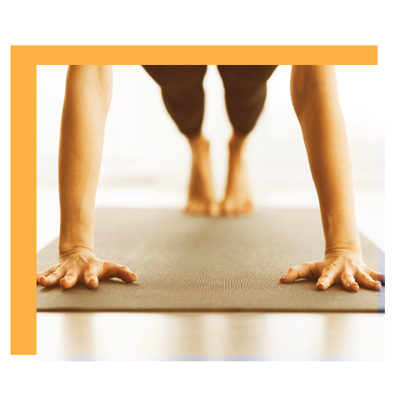
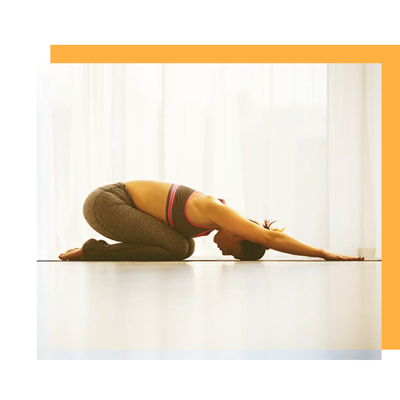
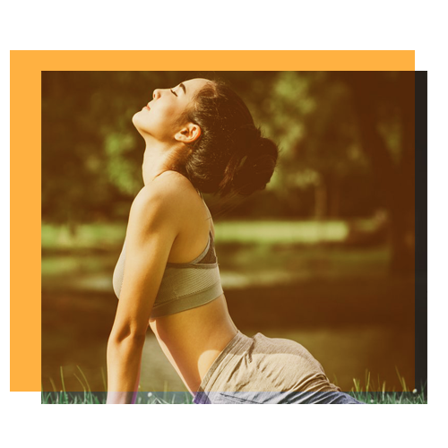

Discover foundational knowledge about yoga and yoga postures.At these mid tempo classes our hope is
to ignite the body and mind as well as cultivate body awareness.Discover foundational knowledge
about yoga and yoga postures.At these mid tempo classes our hope is
to ignite the body and mind as well as cultivate body awareness.

Hatha Yoga
At these slow tempo classes our hope is to bring peace, vitality and healing to body, mind and heart.

Fly Yoga
At these calm and collected classes we hope to teach you yoga that can lead to and support
meditation. Amongst other things you will be taught technics to create a comfortable seat, as well
as small sequences and flows that can be use prior to a meditation practise

Stretching
Stretching keeps the muscles flexible, strong, and healthy, and we need that flexibility to maintain
a range of motion in the joints. Without it, the muscles shorten and become tight. Then, when you
call on the muscles for activity, they are weak and unable to extend all the way. That puts you at
risk for joint pain, strains, and muscle damage.